Visibility-Based Blending for Real-Time Applications
Taiki Fukiage Takeshi Oishi Katsushi Ikeuchi
The University of Tokyo
ABSTRACT
There are many situations in which virtual objects are presented half-transparently on a background in real time applications. In such cases, we often want to show the object with constant visibility. However, using the conventional alpha blending, visibility of a blended object substantially varies depending on colors, textures, and structures of the background scene. To overcome this problem, we present a framework for blending images based on a subjective metric of visibility. In our method, a blending parameter is locally and adaptively optimized so that visibility of each location achieves the targeted level. To predict visibility of an object blended by an arbitrary parameter, we utilize one of the error visibility metrics that have been developed for image quality assessment. In this study, we demonstrated that the metric we used can linearly predict visibility of a blended pattern on various texture images, and showed that the proposed blending methods can work in practical situations assuming augmented reality.
Keywords: Visibility, Human visual system model, Blending
Index Terms: I.5.1 [Information interfaces and presentation]: Multimedia Information Systems—Artificial, augmented, and virtual realities; H.1.2 [Models and Principles]: User/Machine Systems—Human factors
1 INTRODUCTION
In many interactive applications, one sometimes needs to render an object half-transparently on a background scene image. For example, in portable augmented reality systems, rendering virtual information in 100% opacity can be dangerous because obstacles in the real world are often occluded. Virtual objects may also be rendered transparently for the purpose of X-ray visualizations [6, 26]. In showing virtual objects in optical see-through systems, or structured augmented reality systems, virtual information is usually perceived half-transparently.
Under all of those situations, one often wants to keep visibility of a rendered object constant. However, there is still no established method that can blend two images according to a subjective measure of visibility. In the conventional alpha blending method [20], we can change opacity of one image relative to another image by an alpha value. However, the size of the alpha value does not necessarily correspond with the visibility of an image against another image. For example, given a situation in which a virtual object is blended with a background image, visibility of the virtual object largely depends on intensities and textures of the background scene and the virtual object (left column in Fig. 1).
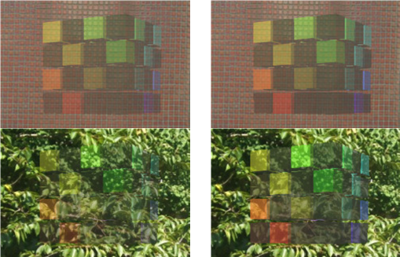
Figure 1. A virtual object is blended with two different background images by (Right column) the visibility-based blending, and (Left column) the conventional alpha blending with a constant alpha value (=0.4). Using the conventional alpha blending, visibility of the virtual object largely depends on intensities and textures of background scenes. The proposed blending method overcomes this problem by locally optimizing a blending parameter based on a subjective measure of the visibility.
Likewise, in optical see-through systems, the visibility of any virtual information necessarily depends on textures or structures of background scenes. This causes substantial inconvenience when we want to keep visibility of an object constant regardless of the background scene.
One possible solution to this problem is to predict the visibility, and optimize a blending parameter. In this work, we employed one of the error visibility models to predict visibility, which have been developed for the purpose of image quality assessment [12, 15]. In the error visibility model, visibility of image distortion is predicted by comparing simulated neural responses for an original image, and those for a distorted image. The simulation of neural responses is based on the computational model of the primary visual area (referred to as V1). In our case, the input images are replaced with an image before blending, and an image after blending; visibility of the blended image is predicted by comparing simulated responses for the two input images. A clear advantage of this method is that we can estimate visibility of a blended object, excluding the effect of the background scene.
In this study, we propose two blending methods based on the visibility model. One is the visibility-based blending, which locally optimizes a blending parameter such that the visibility of the blended object achieves the arbitrarily targeted level. The other method is the visibility-enhanced blending for optical seethrough systems, in which visibility of a virtual object is adaptively and locally enhanced. Using the proposed method, we can blend an object with constant visibility across different background scenes (right column in Fig. 1). In addition, we can keep the visibility uniform across every region within the same scene.
The rest of this paper is organized as follows. In the following section, we review related works regarding legibility studies on AR/MR as well as error visibility studies for image quality metrics. In the third section, we introduce the visibility model we used. Then, in the fourth and fifth sections, we propose the two blending methods. Subsequently, in the sixth section, we evaluate our blending methods. Finally, in the last section, we complete this paper with a summary and conclusion.
2 RELATED WORK
In AR/MR visualizations, several studies have worked on improving legibility of virtual information rendered on background scenes. Although those studies did not assume rendering virtual information half-transparently, the problems considered were very similar to those raised in our work.
For example, [7] investigated the effect of background colors and textures on legibility of texts rendered on the real scene. They found that the background colors and textures can significantly affect users’ performance. They also designed a method that enhances legibility by setting the color of the text based on averaged color of the background. However, their method was not based on any quantitative model that predicts legibility on arbitrary background with various textures and colors.
Some studies used the saliency map model to retain legibility of important regions in X-ray visualizations on AR/MR systems. The saliency map model is a computational model that predicts how much a region can attract bottom-up attention [10]. In order to keep legibility of important regions of the real occluding object while rendering an occluded scene behind them, [22] extracted salient regions from the occluder based on the saliency map and overlaid them on the occluded scene. Conversely, [11] used the saliency map to adaptively enhance occluded information viewed through a real occluding surface. However, the saliency map only shows how salient each region of a single image is relative to surrounding regions, and does not necessarily provide a quantitative visibility level of a half-transparent object relative to the background scene at the same location.
To correctly predict the visibility level of a half-transparent object on an arbitrary background, we adopted the framework of error visibility metrics for image quality assessment. Those error visibility metrics usually take into account basic features of the human visual system that are thought to be important for predicting visibility. Hereafter in this section, we introduce those basic features of the human visual system, and review some works that utilized the human visual system model to design error visibility metrics for image quality assessment.
2.1 Basic features of the human visual system
Visibility can be mostly understood from two key features, contrast sensitivity and contrast masking. Here, we introduce each of the two features and their underlying mechanisms.
2.1.1 Contrast sensitivity
One of the key features that contribute to visibility can be observed as contrast sensitivity for stimuli with various spatial frequencies (known as contrast sensitivity function, CSF). As shown in Fig. 2, contrast sensitivity of the human visual system has a band-pass nature, with its peak at around 2-5 cycles per degree [2,3]. Evidence from psychophysical and physiological studies has shown that several different mechanisms, each of which is tuned to separate, and a more limited band of spatial frequencies, underlie the CSF [2,9]. Each of the spatial frequency detection mechanisms is also tuned to a specific range of orientations. It is believed that those mechanisms are implemented by neurons in V1. Each of those neurons responds most highly when a visual stimuli, with its preferred spatial frequency and orientation, is presented at its preferred retinal position. Thus, it can be said that in the early stage of the visual processing, visual stimuli are linearly decomposed by several different neural channels, each of which are tuned to a specific band of spatial frequencies, a specific range of orientations, and a specific location in the visual field.
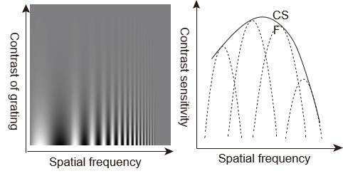
Figure 2. Contrast sensitivity function. (Left) Contrast sensitivity for a visual stimulus depends on its spatial frequency. (Right) Schematic illustration of the contrast sensitivity function (solid line) and its underlying spatial frequency channels (broken lines).
2.1.2 Contrast masking
Visibility of a visual stimulus also depends on contrast of its background (a phenomenon known as contrast masking [13]). In Fig. 3, a sinusoidal target with the same contrast is embedded on different backgrounds. In the leftmost image, the target is presented on a plain background, but in the center image, the same target is added on a background with a similar sinusoidal pattern. Here, physical intensity increment and decrement relative to background, is exactly the same between both images. However, visibility of the target is lower in the center image. This contrast masking also occurs if the orientation of the background pattern is different from that of the target (see the rightmost image) though the effect becomes relatively smaller [5].
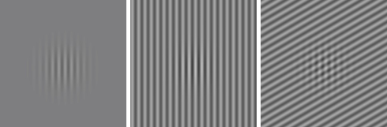
Figure 3.Examples of the contrast masking effect. When the sinusoidal target is embedded on textured backgrounds, visibility of the target decreases though the physical intensity increment or decrement is kept constant across images.
The contrast masking can be explained by a non-linear contrast gain control process in V1. Currently, the most influential model of the gain control mechanism is the divisive normalization model [8]. According to the divisive normalization model, a response of each neuron is divisively normalized by the weighted sum of the responses of neurons that are tuned to the same location (including the neuron whose response is being normalized). Because the response to the target stimulus (or increment of the response regarding the target stimulus) is reduced due to the normalization when another pattern is added on the same location, perceived contrast of the target would also be reduced. The model can explain a vast variety of data, including physiologically measured neural responses and psychophysically measured contrast masking data [8, 25, 28].
2.2 Error visibility metric based on V1 model
The error visibility metrics have been developed using computational models of V1 (V1 model) that can simulate the basic features described in the previous section. In most of the error visibility metrics, the two input images (an original image and a distorted image) are processed in the V1 model, and a quantitative measure of visible differences between the input images is obtained by comparing each output from the V1 model. Most of the V1 models are composed of two components, each represents the neural mechanisms underlying each of the two basic features described in the previous section.
In the first stage of the V1 model, the input image is linearly decomposed into a set of subbands, consisting of several frequency bands and orientation bands, at each location. The coefficients of those subbands stand for the responses of the neural channels, each tuned to the frequency band, the orientation band, and the local position. The coefficients are then multiplied by linear gains to simulate the contrast sensitivity function. In the second stage, the coefficients are non-linearly processed to simulate the contrast masking effect.
To simulate the linear decomposition process in V1, [4] used the cortex transform [27], which decomposes an image into 4 frequency levels by 6 orientations in Fourier domain. Although filters of the cortex transform are strictly designed to mimic selectivities of neural channels in V1, the computational cost of the transform is relatively high. Instead of the cortical transform, [1] used a wavelet transform for linear decomposition to integrate the error visibility metric into a wavelet-based image compression scheme (e.g. [16]). The wavelet transform is suitable to simulate the linear decomposition process in V1 because it can efficiently decompose an image into multiple subbands that have similar selectivities to those of neural channels in V1.
However, the error visibility metrics in [1,4] only showed probabilities of detection of image distortions at each location, and could not predict perceived magnitude of visible distortions. [14] overcame this limitation by using just-noticeable contrast difference as a unit of distortion measure. On the other hand, [12, 25] explicitly incorporated the divisive normalization model to simulate neural responses in V1, and used a difference between those simulated responses as the perceived size of visible distortion. [12] further showed that their error visibility metric can well predict psychophysically measured visibility of several kinds of distortions.
3 VISIBILITY MODEL
The visibility-based blending proposed in this paper optimizes a blending parameter according to the visibility of a blended object predicted by the visibility model. The visibility model we used is based on the error visibility model proposed by [12].
A schematic of the visibility model is shown in Fig. 4. In the visibility model, two input images, an image before blending and an image after blending, are first converted to a color space that is more appropriate to simulate the behaviors of the visual system. Next, the converted images are processed in the computational model of the visual mechanisms in V1, (V1 model) and simulated neural responses of several neural channels are obtained for each location of each image. Then, differences of those neural responses between the two images are pooled across neural channels. Finally, the pooled difference is used as a measure of the subjective amount of visibility for that location.
Although most of the mathematical formulations are common between the visibility model used in this paper and that in [12], some modifications are incorporated to obtain better results, as well as to reduce computational cost. Those modifications are as follows:
- Using CIE L*a*b* color space instead of YUV
- Considering local lightness difference in addition to contrast difference
- Ignoring chromatic contrast difference
- Ignoring inhibition from surrounding pixels in the divisive normalization process
In the following part, we show the details of the visibility model including explanations for these modifications.
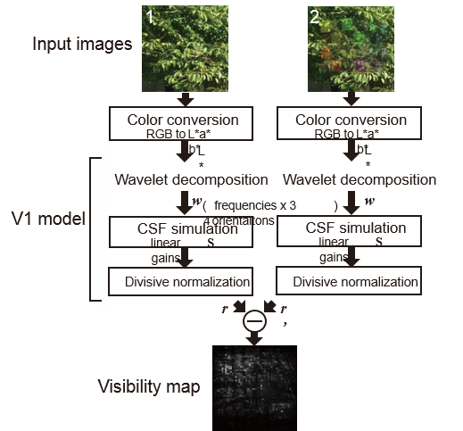
Figure 4. Schematic of the visibility model. The visibility of blending image (the right image) is calculated by comparing simulated neural responses for the blending image and a background image before blending (the left image).
3.1 Color conversion
In the first stage of the visibility model, input images are converted from RGB to the CIE L*a*b* color space. Although [12] used the YUV color space, the L*a*b* is better because the L* channel in the L*a*b* is more perceptually linear than the Y channel in the YUV. In addition, we only used L* channel to calculate visibility because sensitivity for iso-luminant color contrast is small compared to that for luminance contrast [17]. Since we assume use of the blending method for real-time applications, we gave priority to efficiency at the expense of a presumably small contribution of the color channels.
3.2 Simulation of the contrast sensitivity function
The input images are then linearly decomposed into several oriented frequency domains to simulate behaviors of the neural channels; each tuned to a specific range of spatial frequency bands and a specific range of orientation bands. In [12], the separable QMF wavelet transform (proposed in [24]) was used for the image decomposition. The QMF wavelet filter decomposes an image into 4 frequency bands and 3 orientation bands (horizontal, vertical, and diagonal), giving a vector w composed of 12 coefficients for each location. Although two diagonal orientations (i.e., 45° and -45°) are confounded with each other in the separable QMF wavelet transform, it fits real time applications quite well since the calculation speed is very fast.
After the transformation, each of the 12 coefficients w is multiplied with linear gains S as follows:
$$c_i = S_iw_i \quad \quad \quad (1)$$
where $c_i$ and $w_i$ denote a wavelet coefficient of the ith filter, after and before the linear gain process, respectively. $S_i$ is a linear gain for the ith filter to simulate the CSF. In [12], $S_i$ is modeled by the following function:
$$S_i = S_{(e,o)} = A_o exp(- \frac{(4-e)\theta}{s^\theta}) \quad \quad \quad (2)$$
where $e$ and $o$ denotes the scale ($e$ can be 1, 2, 3, and 4, from fine to coarse), and the orientation ($o$=1, 2, 3, each of which stands for horizontal, diagonal, and vertical, respectively). $A_o$ is the maximum gain for the orientation $o$, $s$ controls the bandwidth, and $\theta$ determines the sharpness of the decay. Here, the parameters $A_o, s, and θ$ are given in [12]. The values of those parameters are shown in Table 1.
3.3 Simulation of the contrast masking effect
The coefficients are then divisively normalized to simulate the contrast masking effect. According to [12], we used the following equation to obtain the normalized response of neural channel i:
$$r_i = sign(c_i)\frac{|c_i|^\gamma}{\beta ^\gamma_i + \sum^n_{k=1} H_{ik} |c_k|^\gamma} \quad \quad \quad (3)$$
where $\gamma$ is a constant given in [12]. $\beta_i$ is a saturation constant for the ith filter, which defines the point at which saturation begins (this is also necessary to prevent division by zero). The saturation constants are determined according to a standard deviation of each wavelet coefficient of 100 natural images sampled from a calibrated image database [18]. Since the standard deviations of wavelet coefficients can differ between different color spaces (L*a*b* in our model and YUV in [12]), we recalculated the standard deviations, and multiplied them by a scaling constant $b$ to obtain $\beta_i$. The scaling constant $b$ was determined via optimization described in section 3.6.
In Eq.3, $H_{ik}$ denotes a weight that defines the size of influence of the kth filter to the ith filter. $H_{ik}$ is assumed to be larger if the kth filter is neighboring the ith filter in its dimension, and is defined as follows:
$$H_{ik} = H_{(e,o),(e^\prime,o^\prime)} = K exp(-(\frac {(e-e^\prime)^2}{\sigma^2_e}+\frac{(o-o^\prime)^2}{\sigma^2_o})) \quad \quad \quad (4)$$
where $(e,o)$ and $(e^\prime, o^\prime)$ indicates the frequency level and orientation to which each of the ith and kth filters is tuned. $K$ is a normalization factor, which ensures that summation of $H_{ik}$ for all k equals one. $\sigma_i and \sigma_o$ are given in [12]. In [12], they assumed not only interactions from nearby frequency levels or orientations, but also interactions from nearby pixels. However, it is quite time consuming to access surrounding pixels every time we calculate each of the divisive normalization responses. Since we need to iteratively calculate the visibility to optimize a blending parameter, in this work, we approximated the weight function $H_{ik}$ as in Eq.4, omitting the term related to the spatial interaction. In section 6.1, we show that the approximated model can predict visibility of a blended pattern quite well. A previous study also suggested that spatial pooling over space was very localized [28].
3.4 Responses for local lightness
In [12], only 4 band-pass subbands are taken into consideration for visibility calculation. Thus, the visibility model in [12] cannot correctly predict visibility if the differences exist in the frequency range lower than that covered by those subbands. This defect can cause incorrect blending results due to visibility underestimation around pixels where both virtual object and background real scene have smooth surfaces (e.g. sky, less textured walls, darkly shaded regions, etc.).
To prevent this, in this work, we additionally consider responses for local lightness by using low-pass residual in the result of the QMF wavelet transform. We modeled the response for local lightness $r_L$ as follows:
$$r_L = \omega w_L \quad \quad \quad (5)$$
where $w_L$ denotes a wavelet coefficient of the low-pass residual and $\omega$ denotes a linear gain.
3.5 Pooling simulated responses
After simulated responses are obtained for both input images, the differences of the responses between the two images are pooled across neural channels for each location. This process is modeled as an $l_p$ norm:
$$d_{xy} = \frac{1}{n+1}(|r_L-r^\prime_L|^p + \sum^n_{i=1}|r_i-r^\prime_i|^p)^{\frac1p} \quad \quad \quad (6)$$
where $d_{xy}$ denotes the pooled difference of simulated responses for a local position $(x,y)$. $r_i and r_i^\prime$ are the simulated responses of the ith neural channel (filter) for each of the two input images. $n$ is the number of neural channels and thus is equal to 12. $r_L and r_L^\prime$ are the simulated responses for local lightness for each of the two input images.
3.6 Parameter optimization
In [12], the parameters in the visibility model were optimized via fitting to a set of subjectively rated image quality data. They demonstrated that the optimized model not only explains a larger set of image quality data, but also reproduces basic trends in psychophysical data (i.e., contrast sensitivity and contrast masking). So as not to impair the compatibility of their optimized model, we used the parameters given in [12], except for the saturation constants $\beta$ (in Eq. 3), and a linear gain $\omega$ for local lightness (in Eq. 5). Thus, in this paper, only two parameters (the scaling constant $b$ and the linear gain $omega$) were optimized.
The parameters were optimized via fitting to the subjectively rated visibility of a pattern that was blended with various natural textures and with various transparencies. The detail of the data acquisition procedure is described in section 6.1. To compare the visibility predicted by the model simulation with a subjective visibility score, the local visibility values $d_{xy}$ (Eq. 6) were pooled across pixels according to the following equation.
$$d = \frac 1m(\sum_{(x,y)\in O}d_{xy}^q)\frac1q \quad \quad \quad (7)$$
where $O$ denotes a group of pixels that belong to the pattern, and $m$ is the number of pixels in $O$. Here, we used $q=2.2$, according to [12]. The parameters $(b, \omega)$ were optimized by minimizing the residual sum of squares as a result of linear regression between the subjective visibility scores and the predicted visibility $d$.
The obtained parameters $(b, \omega)$ were $(10.3, 0.35)$. The saturation constants $\beta$ scaled by $b$ are shown in Table 1. It should be noted that the saturation constants $\beta$ obtained in this paper are quite similar to those obtained in [12]. Thus, the changes in those parameters did not affect the predictability of the model optimized in [12].
| Parameters | Optimized values | |||||||||||||||
|---|---|---|---|---|---|---|---|---|---|---|---|---|---|---|---|---|
| $A_o$ | 40 when o=1 or 3 (horizontal or vertical) 36.6 when o=2 (diagonal) | |||||||||||||||
| $s$ | 1.5 | |||||||||||||||
| $\theta$ | 6 | |||||||||||||||
| $r$ | 1.7 | |||||||||||||||
| $\sigma_e$ | 0.25 | |||||||||||||||
| $\sigma_o$ | 3 | |||||||||||||||
| $p$ | 4.5 | |||||||||||||||
| $\omega$ | 0.35 | |||||||||||||||
| $\beta_i = \beta_{(e,o)}$ |
|
Table 1. Parameters of the visibility model used in this study. In these parameters, $\omega$ and $\beta$ were optimized via fitting to the subjectively rated visibility data obtained in this work (section 6.1). The other parameters were obtained from [12].
4 VISIBILITY-BASED BLENDING
Based on the visibility model described in the previous section, we propose the visibility-based blending. The visibility-based blending locally optimizes a blending parameter ($\alpha$) such that the visibility of the blended object achieves the arbitrarily targeted level. The blending equation we assumed is as follows:
$$I = \alpha I_1 + (1-\alpha)I_2 \quad \quad \quad (8)$$
where $I_1$ denotes an image intensity of the to-be-blended object and $I_2$ denotes an image intensity of the background scene (both colors are in the L*a*b* color space).
A schematic of the visibility-based blending is shown in Fig. 5. In the first stage, the two input images are converted into CIE L*a*b* color space and the images in L* channel are decomposed by the 4-scale separable QMF filter. Those two images are a background image before blending and an image in which a to-beblended object is rendered on the background image with 100% opacity. Since the QMF transform is a kind of linear transform, we can generate decomposed image data of any blending image with arbitrary transparency level by linearly combining these two decomposed images.
After the QMF transform, we have 12 coefficients (4 frequency levels by 3 orientations) for every location of the input images. The next step is to find an optimum blending parameter to realize the target visibility for every location. The optimum $\alpha$ is searched for by the binary search method. In every step of the search algorithm, the visibility of the rendering result by the current $\alpha$ is calculated and whether the visibility is higher than the target visibility is checked.
The visibility at the current $\alpha$ is obtained as follows. Firstly, the coefficients of the blending image at the current $\alpha$ are generated by linealy combining the coeffients of the two input images using the current \$alpha$ and Eq. 8. Here, $I$ in Eq. 8 denotes the combined coefficients. $I_1$ and $I_2$ denote the coefficients of the input image 1 (background scene) and the coefficients of the input image 2 (the background + an opaque object), respectively.
The combined coeffients are then processed by the linear gains $S$, and divisively normalized according to Eq.3. The coeffients of the background image (the input image 1) are also processed by Eq. 3. The responses for local lightness are also calculated for both images by Eq. 5. Then, the pooled difference of those simulated responses is calculated by Eq. 6.
The value $d$ obtained in Eq. 6 is used in comparison to the target visibility. The next $\alpha$ is decreased if the visibility $d$ is higher than the target and the next $alpha$ is increased if $d$ is not higher than the target. The size of increment/ decrement is initially set 0.25, but it is halved at the end of every step. The initial blending parameter $\alpha_0$ is 0.5. The search is finished after 8 iterations.
Finally, the blending is conducted according to Eq. 8, using the optimized $\alpha$. However, a locally optimized $\alpha$ can often cause artificial edge or discontinuity in appearance of a blended object because optimization is independent across pixels. Therefore, we averaged each $\alpha$ within a predifined window. The size of the window is empirically given.

Figure 5. Overview of the visibility-based blending. Input images are (1) a background image before blending and (2) an image after blending an object with 100% opacity. In each step of the optimization process of the blending parameter $\alpha$, filter coefficients $\omega$ of a blending image by the current $\alpha$ are generated by linearly combining those of the two input images. Then, visibility at the current $\alpha$ is calculated by Eqs. 3 to 6. Finally, the current visibility is compared with the target visibility and $\alpha$ is updated. After 8 iterations of this step, the blending result is generated by Eq. 8 using the optimized $\alpha$ value.
5 VISIBILITY-ENHANCED BLENDING FOR OPTICAL SEE-THROUGH SYSTEMS
In usual optical see-through devices using half-mirrors, colours of a virtual object are added on colours of a real scene. Therefore, a virtual object the observer sees is always transparent to a certain extent. Under such circumstances, the visibility of a virtual object depends not only on incoming light intensity from the real scene and the display device, but also on textures or structures of the virtual object and its background real scene. Using the visibility model, we are able to take into consideration such attributes to predict visibility. Here, we propose a blending method that can adaptively enhance the visibility of a virtual object added on a real scene in optical see-through systems. In our method, the visibility is enhanced by increasing intensities of local pixels where visibility is lower than the targeted level.
To accurately predict visibility of virtual objects in optical seethrough systems, we need to know the exact location of the object in the scene in the user’s visual field. Moreover, we have to know the adaptation level of the user’s eyes to the current light level in the real scene. This kind of information is necessary for simulating how the AR/MR scene is seen through the user’s eyes. Although those calibrations are important issues, and indispensable for applying our method to practical systems, in the present work we assumed that the simulated MR/AR scene image under accurate calibrations is already given. Therefore, we focused on describing the visibility enhancement method itself.
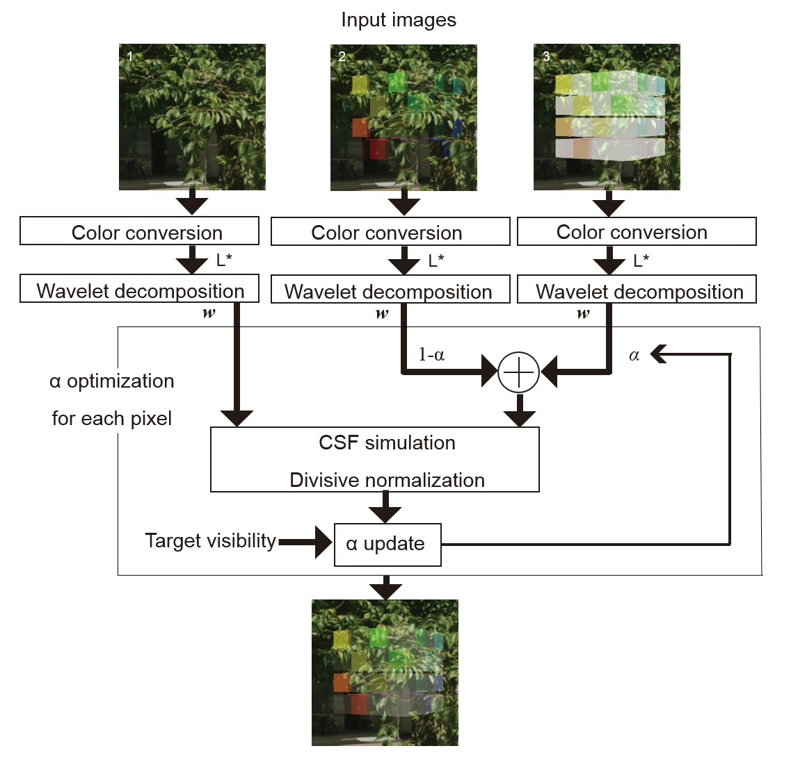
Figure 6. Overview of the visibility-enhanced blending for optical see-through systems. There are three input images: (1) a background real scene image, (2) a simulated mixed reality scene, as an original rendering result, and (3) a simulated mixed reality scene in which the object is rendered with the maximum intensity. The final blending result is obtained by linearly combining (2) and (3) with a locally optimized weight $\alpha$.
A schematic of the visibility enhanced blending is shown in Fig. 6. As shown in Fig. 6, the process of the visibility-enhanced blending is almost the same as that of the visibility-based blending in the previous section. The major difference is that we need three input images: (1) a background real scene image, (2) a simulated mixed reality scene, as an original rendering result, and (3) a simulated mixed reality scene in which the object is rendered with the maximum lightness level. To obtain the object’s color of the maximum lightness, the object’s image is first converted to CIE L*a*b* space and then the values in L* channel are replaced with the maximum value. The final blending result is obtained by linearly combining (2) and (3) with a locally optimized weight $(\alpha)$ for each pixel using Eq. 8. Here, $I_1$ denotes a simulated image in which the object is rendered with the maximum intensity, and $I_2$ denotes a simulated image of the original rendering result.
Again, the optimum $\alpha$, which shows the nearest visibility to the target visibility, is searched for within a range between 0 and 1 by the binary search. In each step of the search algorithm, the visibility with the current $\alpha$ is calculated by Eq. 6. To calculate the visibility in Eq. 6, simulated responses for a simulated mixed reality scene, generated by a linear combination of the input images (2) and (3) with the current $\alpha$, are compared with simulated responses for the background real scene.
The other details are exactly the same as those of the visibilitybased blending method. The visibility at the current $\alpha$ is compared with the target visibility. According to the result of the comparison, the next $\alpha$ is increased or decreased by the current stepsize. Then, the stepsize is halved, and the next step begins. The search is finished after 8 iterations.
Finally, the blending is conducted according to Eq. 8, using the optimized $\alpha$ that is averaged within a predefined window.
6 EXPERIMENT
In this section, we firstly test the validity of the visibility model, which we described in section 3 and used in the two proposed blending methods. As for the original visibility model proposed in [12], they demonstrated that their model can explain subjective error visibility data for a large variety of image distortions. However, how well the model can explain perceived visibility of a blended object was not explicitly studied. Moreover, we modified their model in several points. Thus, we need to validate our version of the visibility model. After the validation of the visibility model, we tested the proposed blending methods using several real scene images and virtual objects.
6.1 Validation of the visibility model
We conducted an experiment in which human observers rated the visibility of a pattern blended by various levels of transparency on various textures. The rated visibility data was used to test the visibility model as well as to optimize a couple of parameters in the model (see section 3.6 for the details of the parameter optimization). Here, we show the details of the data acquisition procedure and the results of comparison between the visibilities obtained from the visibility model and subjectively rated visibility data.
6.1.1 Methods
Apparatus
Stimuli were presented in a dark room on a CRT monitor (Sony Trinitron Multiscan CPD-17SF9, 17 inch, 1024 × 768 pixels, refresh rate 75 Hz, mean luminance $44.6 cd/m^2$). Each subject placed his/her head on a chin-rest and used both eyes to view the stimuli. The viewing distance was 114 cm. According to [12,15], the visibility model assumes that images are observed at a distance where the images are sampled at 64 cycles per degree. The viewing distance was determined by following this assumption.
Stimuli
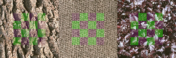
Figure 7. Examples of the stimuli. The observers rated the visibility of the checkerboard pattern blended on the natural texture image.
In every stimulus, a checkerboard pattern was blended on a natural texture image (Fig. 7). The checkerboard pattern subtended 200 pixels (a visual angle of 3.1 deg) both horizontally and vertically, and was composed of two colors, whose RGB values are (0, 0.8, 0) and (0.2, 0, 0.2). 50 different photo images were used as the texture images. The resolution of the textures was 512 x 512 and subtended 8 deg in visual angle. The texture images were mostly taken from [19]. 48 homogeneous textures in frontal perspective were chosen from the database. Those textures included photos of bark, brick, fabric, flowers, food, grass, leaves, metal, sand, stone, and tile. 2 photo images of leaves were additionally taken by one of the authors. The checkerboard and the textures were blended by the simple alpha blending (Eq. 8). Here, $I_1$ and $I_2$ in Eq. 8 denote the checkerboard pattern image and the texture image, respectively. For each natural texture image, 5 blending images were produced using different $\alpha$’s. The $\alpha$ was modulated approximately on a logarithmic scale so that visibility of the checkerboard varied as equally and broadly as possible.
Static and Dynamic conditions
In addition to the static condition in which both the checkerboard pattern and the texture image were fixed at the center of the display, we also tested the dynamic condition in which the checkerboard pattern and the texture image were moving at different speeds, assuming practical situations. Under the dynamic condition, both the checkerboard pattern and the texture image were swinging horizontally in the same direction. Their speeds were modulated sinusoidally in the same temporal frequency, 1 Hz, but the widths of the swings were different: 0.8 deg for the checkerboard and 1.6 deg for the texture.
Participants
Ten observers, unaware of the purpose of the experiment (9 male and 1 female, aged 22–27), participated in the study. 9 of the observers completed both static and dynamic conditions. The other male observer participated only in the dynamic condition.
Procedure
Before starting the experiment, a training session was conducted. In training, the approximate range of visibility of the stimuli was presented, and the observers were told to make a consistent criterion to judge visibility.
In the experiment, one of the stimuli was presented for 1.6 seconds in each trial. After disappearance of the stimulus, the observer evaluated visibility of the checkerboard pattern in a numerical scale of 1 to 5, where 1 denotes “invisible,” 2 denotes “barely visible,” 3 denotes “visible,” 4 denotes “fairly visible,” and 5 denotes “very clear.” Those words were always presented beside the corresponding numerical values. The observer could also choose an intermediate scale between arbitrary abutting scales. The observer performed the task by using a mouse. For each of the static and dynamic conditions, there were in total 250 stimuli. The 250 stimuli were presented in a random order. For those who participated in both of the conditions, the observers completed the dynamic condition first, and the static condition was conducted on another day. A training session was conducted every time they started the experiment in that day.
6.1.2 Results
We compared the visibility estimated by the visibility model described in section 3 with the subjectively evaluated visibility. The subjective data was converted into Z scores within observers using the following equation:
$$z = \frac {\upsilon - \mu_\upsilon}{\sigma_{\upsilon}} \quad \quad \quad (9)$$
where $\upsilon$ denotes a raw score of visibility. $\mu_\upsilon$ and $\sigma_\upsilon$ denote the average and the standard deviation of the raw scores for the 250 stimuli, respectively. The z scores of individual observers were then averaged across observers for each stimulus, which was used as representatives for subjective visibility.
We calculated the visibility by the visibility model described in section 3 for each of the 250 stimuli. In calculating visibility, a stimulus image and a texture image of the stimulus were used as the input images. To obtain a representative value of visibility of the pattern as a whole, we pooled $d_{xy}$ in Eq. 6 using Eq. 7.
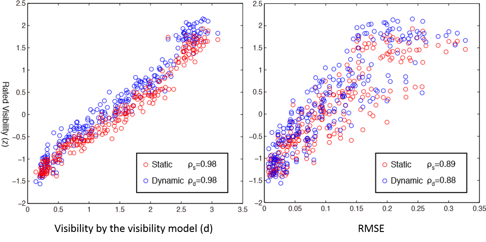
Figure 8. Subjectively rated visibility (z scores) plotted as a function of Predicted visibility d (A) and RMSE (B). $\rho_s$ and $\rho_d$ shown in each plot denote Pearson’s correlation of the static condition and the dynamic condition, respectively.
In Fig. 8A, the subjective visibility (z scores) was plotted as a function of the predicted visibility (d values in Eq. 7) for each of the 250 stimuli. Red circles show the data of the static condition, and blue circles show the data of the dynamic condition. As a comparison, in Fig 8B, we also plotted the same subjective visibility data as a function of Root Mean Squared Error (RMSE) between a blending image and a texture-only image calculated in L*. The Pearson correlation of each plot was also shown in Fig 8.
As shown in the scatter plot and its Pearson correlation, the prediction by the visibility model was remarkably good, despite the fact that most of the parameters of the visibility model were obtained from [12]. Although the data of the subjective visibility was slightly higher in the dynamic condition than in the static condition, the predicted visibility linearly correlated with those data in both conditions.
The reason why the subjective visibility was higher in the dynamic condition may be that the perceived visibility was temporally pooled in a winner-take-all fashion across frames in the dynamic condition. Another possibility is that adaptation of the detection mechanisms in the visual system may reduce responses to the checkerboard pattern in the static condition. Taking into consideration those behaviors in the visual system would further improve predictability of the model.
However, given the linearity and high correlation between the prediction and the subjective data, we can conclude that the model used in the present study was accurate enough for practical uses.
6.2 Evaluation of the proposed blending methods
In the previous section, we demonstrated that the visibility model used in the proposed blending methods can accurately and linearly predict visibility of a blended object on various natural texture patterns. In this section, we firstly show the efficiency of the blending methods (section 6.2.1). Then, we show the effectiveness of each of the proposed blending methods using several experimental images (section 6.2.2. and 6.2.3).
6.2.1 Evaluation of computational efficiency
We implemented all calculations in both of the proposed blending methods in the GLSL shader. The QMF transform in each scale was implemented in GLSL as shown in Fig. 9. In the 1st and 2nd passes, the original image is horizontally convolved by a one-dimensional low-pass (1st pass) or high-pass (2nd pass) filter kernel, and down-sampled in the same direction. Those convolved images are rendered in the same frame buffer. Then, in the 3rd and 4th passes, the combined convolved images are vertically convolved by the low-pass (3rd pass) or high-pass (4th pass) filter kernel and down-sampled. A resultant low-pass image (“LL” in Fig. 9) is then processed into the convolution process in the next scale. In this way, 6 convolutions in each frequency level are accomplished by 4 passes. The 4-scale QMF transform was thus completed after 16 convolution passes.
In a preliminary experiment, however, we found that downsampling noises in the lower frequency subband images can cause temporal inconsistency in the blending result across frames. To reduce the downsampling noise while keeping the computational speed as fast as possible, we modified the algorithm of the QMF wavelet transform such that the downsampling is only applied in the two higher frequency levels. Accordingly, distances between sampling pixels for the convolution kernel were doubled in the second lowest frequency level, and quadrupled in the lowest frequency level.
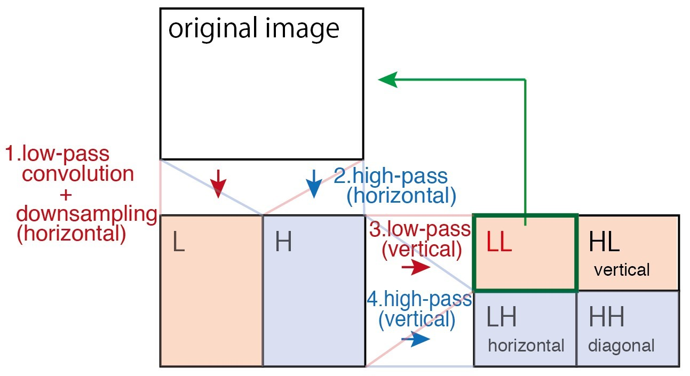
Figure 9. Processes of the QMF wavelet transform in each scale. In each process, the image is convolved by a one-dimensional low-pass or high-pass kernel, either horizontally or vertically, and down-sampled. To reduce downsampling noise in the lower frequency subband images, the downsampling is only applied in the two higher frequency levels.
In the visibility-based blending (proposed in section 4), L* channel of the two input images are rendered in different channels of a single image, and every convolution is conducted together for both of the images. To reduce degradation of convolved image values due to quantization, we preserved the data in each pass using 2 channels (16 bit) for each input image (i.e., R and G channels for one image, B and alpha channels for the other image). In the case of the visibility-enhanced blending (proposed in section 5), two of the three input images are rendered within a single image and the other input image is rendered on another image. Therefore, the QMF transform is conducted twice to obtain wavelet coefficients of the three input images.
In the experiment, we used a personal computer (OS: Windows 7, CPU: Corei7 2.93 GHz, RAM: 8GB, GPU: nVIDIA GTX 550Ti 1024MB). The resolution of the input images was 640x480. The size of the window to average each optimized $\alpha$ was 65 x 65. Under this condition, both of the proposed blending methods worked at a frame rate higher than 60 FPS.
6.2.2 Experiment on the visibility-based blending
In the experiment, we assumed a situation in which a virtual object is blended with a background real scene. We tested the blending method using a static image. The resolution of the image was 640x480.
Firstly, we tested the visibility-based blending by blending a virtual object with two different real scene images (one had a relatively smooth texture and the other had a high-contrast texture) using 4 different target visibilities ($v_t=0.6, 1.2, 1.8, and 2.4$). As a comparison, we also blended the same virtual object with the same real scene images using the conventional alpha blending using 4 different alpha values ($\alpha=0.2, 0.4, 0.6, and 0.8$). The results are shown in Fig. 10. In the results of the visibilitybased blending, the visibility of the virtual object (the colorful cubes) looks similar between the two vertically aligned images (an image pair in which the same target visibility was used). By contrast, in the results of the alpha blending, the visibility looks significantly different between the two vertically aligned images though the blending parameters ($\alpha$) are the same for both of them.
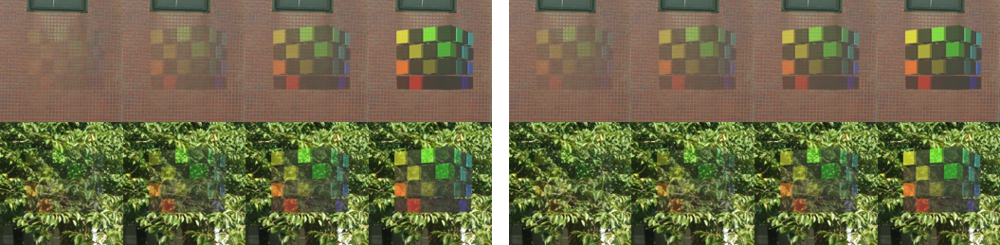
Figure 10. Blending results by the visibility-based blending with 4 different target visibilities, vt (left images) and by the conventional alpha blending with 4 different alpha values (right images). In the images of the visibility-based blending, the visibility of the virtual object (the colorful cubes) looks similar between the two vertically aligned images. By contrast, in the images of the alpha blending, the visibility looks significantly different between the two vertically aligned images though the blending parameters ($\alpha$) are the same for both of them.
In Fig. 11, we show additional experimental results including a more practical situation. Here, a virtual model (a colorful cube or a tower-like building) was blended by the visibility-based blending (left column) and by the alpha blending (right column). In the results of the alpha blending, a constant alpha value was used for every region of the same scene. However, the visibility of the virtual object blended by the alpha blending looks different between regions within the image.
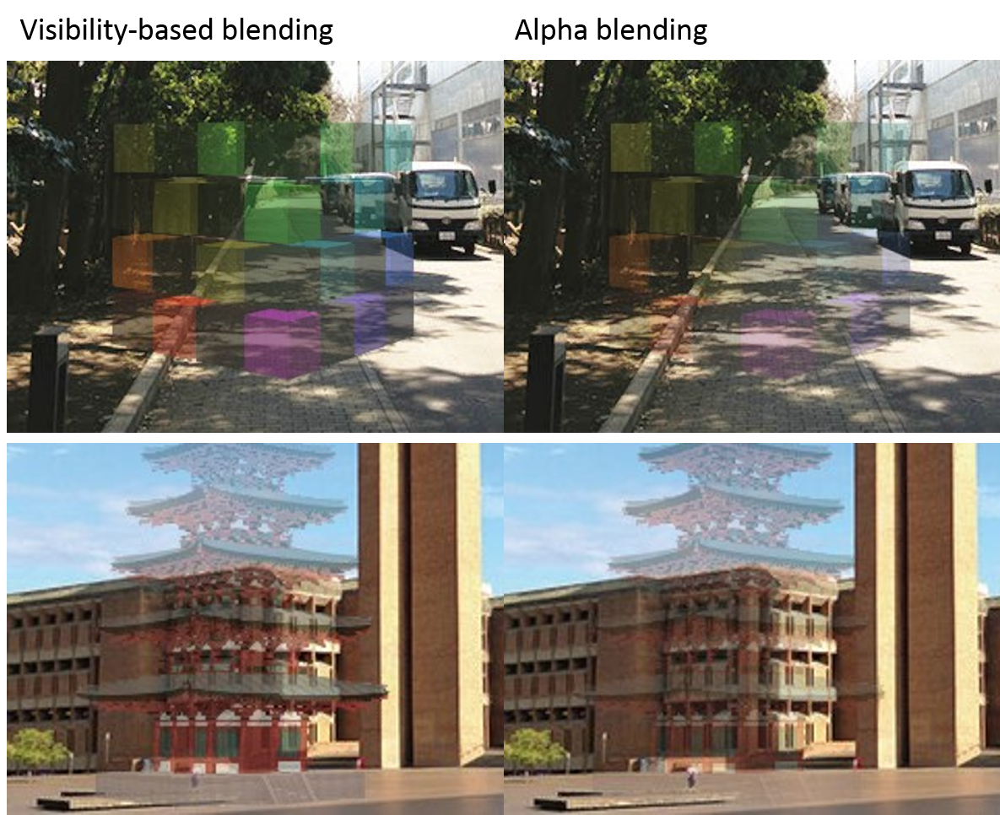
Figure 11. Examples of the visibility-based blending (Top images) and comparison results of the conventional alpha blending (Bottom images). In the images of the alpha blending, the visibility varies depending on lightness and textures of background scene. On the other hand, in the images of the visibility-based blending, the visibility is kept constant.
This problem of non-uniform visibility is found in both results of the alpha blending. On the other hand, in the results of the visibility-based blending, the problem is mitigated, and every part of the virtual object looks almost uniform in every image (the target visibility was 1.5). Therefore, the visibility-based blending will be useful when one wants to show a virtual object with constant and uniform visibility across different scenes as well as across local regions within the same scene, irrespective of textures or structures in the scene.
6.2.3 Experiment on the visibility-enhanced blending method for optical see-through systems
Here, we tested the visibility-enhanced blending method described in section 5. To see how our blending method works under ideal calibrations, we first simulated rendering results in an optical see-through system within an intensity range between 0 and 1 using Eq. 8. Here, $\alpha$ in Eq.8 represents relative influence of the light from the device to that of the incoming light from the real scene. I1 and I2 denote linearized RGB colors of a virtual object and a real scene, respectively. The parameter $\alpha$ we used in the experiment was 0.5. In Fig. 12A, we show experimental results obtained by the simulation. In each image, a virtual object (a colorful cube or an ancient building) was blended on a background real scene. In each row of the figure, the left image shows the result by the visibility-enhanced blending method (target visibility=1.5), and the right image shows the original scene without visibility enhancement. In the original images (right column), the virtual objects are partially hard to see. In the results of the visibility-enhanced blending (top), the visibility is improved in those regions, and we can perceive the whole contour of the virtual object.
Secondly, we tested the visibility-enhanced blending method using an actual optical see through glasses (MOVERIO BT-200, EPSON). To analyze the real scene, we captured the real scene by a camera (Grasshopper2, Point Gray Research). In this experiment, the calibrations were manually conducted such that appearance of the input images for the blending pipeline and that of the actual scene seen through the glasses became as similar as possible (both photometrically and geometrically). Then, the optimized virtual scene was presented on the glasses. The resultant AR scene was captured from outside of one of the glasses by the camera (Grasshopper2). The results are shown in Fig. 12B. The left image shows the result by the visibility-enhanced blending method (target visibility=1.5), and the right image shows the original scene without visibility enhancement. Again, we can see that the visibility is improved in the result with visibility enhancement.
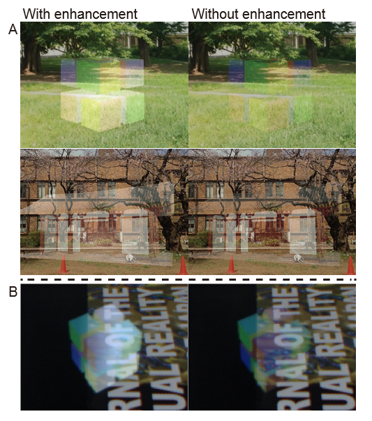
Figure 12. Examples of the visibility-enhanced blending for optical see-through systems. (A) The experimental results obtained by simulation assuming ideal calibrations. (B) The experimental results obtained using an actual optical see-through device. For both cases, the left images show the results of the visibility-enhanced blending, and the right images show the original rendering results.
6.3 Discussion
We demonstrated that the visibility model can linearly predict visibility of a blended object on various natural texture images. Then we showed that the proposed blending methods are effective to blend images with constant and uniform visibility, or enhance visibility of a blended object.
However, the blending methods proposed in this study have some limitations. Firstly, the parameters of the visibility model should be recalibrated depending on the observation distance, or the pixel density per visual angle. In [12], the parameters of the visibility model were optimized via fitting to the psychophysically measured error visibility data. In the data acquisition, the observers rated the image quality at a particular range of observation distances [23]. Thus, the visibility model with the current parameters would not provide precise prediction if the user sees a blending image outside the tolerated range of distances.
Secondly, the visibility model that we implemented in the blending methods only analyzes luminance, and does not include color-opponent channels. Although we demonstrated the model can accurately predict visibility without considering coloropponent channels, considering them would further increase accuracy under cases in which luminance contrast is quite small, but chromatic contrast is large.
As for the visibility-based blending proposed in section 4, there is a problem that the visibility cannot be increased beyond the visibility of a blended object in 100% opacity. However, the problem will be easily solved if we prepare another image that emphasizes existence (e.g. edges) of the object. (Such an attempt is also found in [11]) Adjusting the blending parameter of the emphasizing image according to predicted visibility would adequately increase visibility of such regions.
Finally, as for visibility enhancement for optical see-through systems proposed in section 5, one clear problem is that the enhancement does not work at all when light from a real scene is too intense compared to maximum light intensity of the display system. Another problem is that contrast within surfaces of a virtual object decreases as the enhancement parameter $\alpha$ becomes larger. If one valued quality of appearance of virtual objects, support from hardware (e.g. occluding light from a real scene [21]) would be an ideal solution.
7 CONCLUSION AND FUTURE WORK
We proposed two blending methods based on the visibility model. One is the visibility-based blending, which locally optimizes a blending parameter $\alpha$ such that the visibility of the blended object achieves an arbitrarily targeted level. The other is the visibility enhanced-blending for optical see-through systems, in which visibility of a virtual object is adaptively and locally enhanced to an arbitrary targeted level.
In the experiment, we demonstrated that the visibility model can linearly predict the visibility of a blended object on various natural texture images. Then, we showed that the proposed blending methods are effective to blend images with constant and uniform visibility, or to enhance visibility of a blended object. Since the proposed blending methods work at a sufficiently fast frame rate, they will not violate interactivity even in combination with other computations indispensable for constructing AR/MR scenes (e.g. tracking).
Although the experimental images we showed in this study assumed augmented (mixed) reality scenes, the uses of the proposed methods are not restricted to those situations; the blending methods can be used whenever an image is halftransparently rendered on another image. For example, the visibility-based blending method will be effectively used in blending a virtual object with a virtual scene. The visibility enhancement method is also applicable to spatially augmented reality systems. Another possible use may be stimulus presentation in user studies for such applications. When rendering objects half-transparently, we usually want to know optimum transparency depending on purposes and situations. Using the visibility-based blending, we can modulate visibility of an object independently of its background scene as an independent variable.
In addition, given the generality of the underlying theory (i.e., V1 model), we think that the visibility model we used can also predict legibility of texts on various background scenes. Using an algorithm similar to the one proposed in this paper, we will be able to adaptively enhance legibility of the texts.
REFERENCES
[1] A. P. Bradley. A wavelet visible difference predictor. IEEE Transaction on Image Processing, 5: 717–730, 1999.
[2] F. W. Campbell and J. G. Robson. Application of fourier analysis to the visibility of gratings. Journal of Physiology, 197: 551-566, 1968.
[3] C. R. Carlson, R. W. Cohen, and I. Gorog. Visual processing of simple two-dimensional sine-wave luminance gratings. Vision Research, 17:351-358, 1977.
[4] S. J. Daly. Visible differences predictor: an algorithm for the assessment of image fidelity. In Proceedings of SPIE 1666, pages 215, 1992.
[5] J. M. Foley and G. M. Boynton. A new model of human luminance pattern vision mechanisms: analysis of the effects of pattern orientation, spatial phase, and temporal frequency. In Proceedings of SPIE 2054, pages 32-42, 1994.
[6] T. Fukiage, T. Oishi, and K. Ikeuchi. Reduction of contradictory partial occlusion in Mixed Reality by using characteristics of transparency perception. In ISMAR, pages 129-139, 2012.
[7] J. L. Gabbard, J E. Swan, D. Hix, S. Jung Kim, and G. Fitch. Active text drawing styles for outdoor augmented reality: A user-based study and design implications. In IEEE Virtual Reality, pages 35-42, 2007.
[8] D. J. Heeger. Normalization of cell responses in cat striate cortex. Visual Neuroscience, 9(2): 181-192, 1992.
[9] D. H. Hubel and T. N. Wiesel. Receptive fields, binocular interaction and functional architecture in the cat’s visual cortex. Journal of Physiology, 160:106–154, 1962.
[10] L. Itti, C. Koch, and E. Niebur. A model of saliency-based visual attention for rapid scene analysis. IEEE Transactions on Pattern Analysis and Machine Intelligence, 20(11): 1254-1259, 1998.
[11] D. Kalkofen, E. Veas, S. Zollmann, M. Steinberger, and D. Schmalstieg, Adaptive Ghosted Views for Augmented Reality. In ISMAR, pages 1-9, 2013.
[12] V. Laparra, J. Muñoz-Marí, and J. Malo. Divisive normalization image quality metric revisited. Jounrnal of Optical Society of America A, 27(4): 852-64, 2010.
[13] G. E. Legge and J. M. Foley. Contrast masking in human vision. Jounrnal of Optical Society of America, 70(12): 1458-1471, 1980.
[14] J. Lubin. A human vision system model for objective picture quality measurements. In International Broadcasting Convention, pages 498-503, 1997.
[15] J. Malo and V. Laparra. Psychophysically tuned divisive normalization approximately factorizes the PDF of natural images. Neural computation, 22(12): 3179-3206, 2010.
[16] M. W. Marcellin, M. Gormish, A. Bilgin, and M. P. Boliek. An Overview of JPEG2000. Proceedings of the Data Compression Conference, pages 523-544, 2000.
[17] K. T. Mullen. The contrast sensitivity of human color vision to redgreen and blue-yellow chromatic gratings. The Journal of Physiology, 359: 381–400, 1985.
[18] A. Olmos and F. A. A. Kingdom. Mcgill calibrated colour image database. http://tabby.vision.mcgill.ca., 2004.
[19] R. Picard, C. Graczyk, S. Mann, J. Wachman, L. Picard, and L. Campbell. The MIT Vision Textures database. http://vismod.media.mit.edu/vismod/imagery/VisionTexture/vistex.html, 1995.
[20] T. Porter and T. Duff. Compositing Digital Images. Computer Graphics, 18(3): 253-259, 1984.
[21] J. Rekimoto. Squama: a programmable window and wall for future physical architectures. Proceedings of the 2012 ACM Conference on Ubiquitous Computing, pages 667–668, 2012.
[22] C. Sandor, A. Cunningham, A. Dey, and V. V. Mattila. An Augmented Reality X-Ray System based on Visual Saliency. In ISMAR, pages 27–36, 2010.
[23] H. R. Sheikh, M. F. Sabir, and A. C. Bovik. A statistical evaluation of recent full reference image quality assessment algorithms. IEEE Transactions on Image Processing, 15(11): 3440–3451, 2006.
[24] E. Simoncelli and E. Adelson. Subband Image Coding. Norwell, MA: Kluwer Academic Publishers, pages 143–192, 1990.
[25] P. C. Teo and D. J. Heeger. Perceptual image distortion. In Proceedings ICIP, pages 982-986, 1994.
[26] T. Tsuda, H. Yamamoto, Y. Kameda, and Y. Ohta. Visualization methods for outdoor see-through vision. In ICAT, pages 62-69, 2005.
[27] A. B. Watson. The cortex transform: rapid computation of simulated neural images. Computer vision, graphics, and image processing, 39(3):311-327, 1987.
[28] A. B. Watson and J. A. Solomon. Model of visual contrast gain control and pattern masking. Jounrnal of Optical Society of America A, 14(9): 2379-2391, 1997.